This gallery illustrates the range of maps that you can create using geoshow.
Display world coastlines, without a projection.
load coast
geoshow(lat,long);
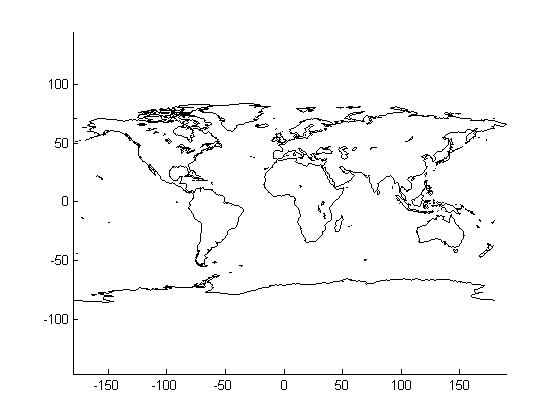Add the international boundaries as black lines.
boundaries = updategeostruct(worldlo('POline')); symbols = makesymbolspec('Line',{'Default','Color','black'}); hold on geoshow(gca,boundaries(1),'SymbolSpec',symbols);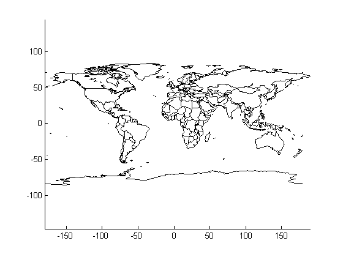
Override the SymbolSpec default rule.
Create a SymbolSpec to display Alaska and Hawaii as red polygons.
symbols = makesymbolspec('Polygon', ... {'tag','Alaska','FaceColor','red'}, ... {'tag','Hawaii','FaceColor','red'});
Display all the other states in blue.
figure;worldmap('na'); geoshow(usahi('statepatch'),'SymbolSpec',symbols, ... 'DefaultFaceColor','blue', ... 'DefaultEdgeColor','black'); axis off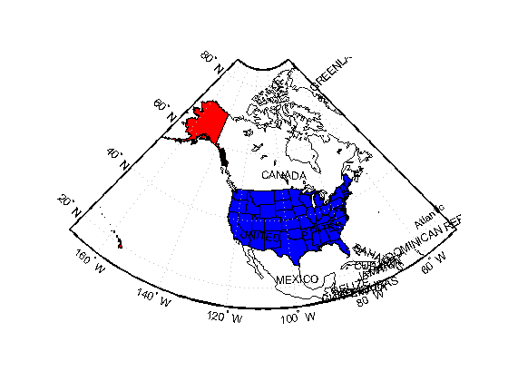
Display the Korean data grid, with the worldhi boundaries.
Display the Korean data grid as a texture map.
load korea figure;axesm mercator geoshow(gca,map,refvec,'DisplayType','texturemap'); colormap(demcmap(map))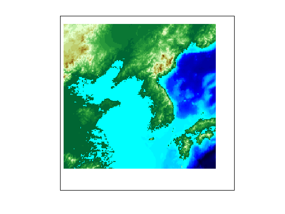
Set the display to the bounding box of the data grid.
[latlim,lonlim] = limitm(map,refvec); [x,y] = mfwdtran(latlim,lonlim); set(gca,'Xlim',[min(x(:)), max(x(:))]); set(gca,'Ylim',[min(y(:)), max(y(:))]);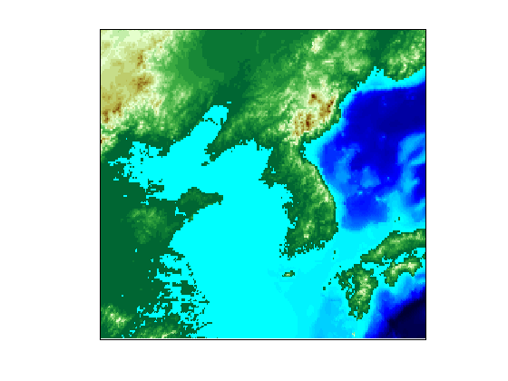
Get the region's worldhi data.
[korea_lat, korea_lon] = extractm(worldhi(latlim, lonlim));
Display the worldhi boundaries.
hold on
geoshow(korea_lat, korea_lon);
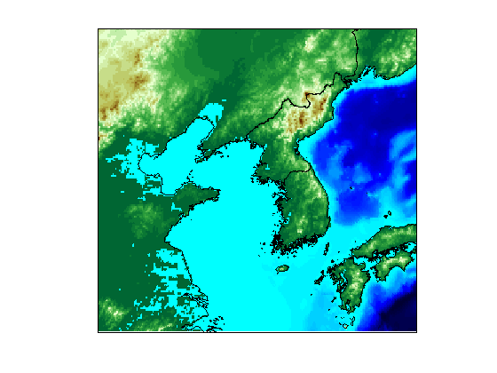Mask the ocean.
geoshow(worldlo('oceanmask'),'EdgeColor','none','FaceColor','c');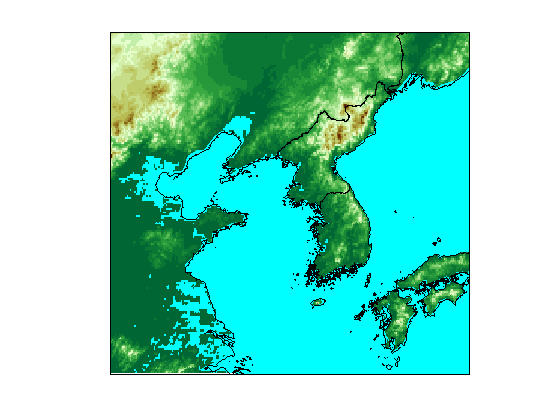
Display the geoid as a texture map.
figure load geoid axesm eckert4; framem; gridm; h = geoshow(geoid, geoidrefvec, 'DisplayType','texturemap'); axis off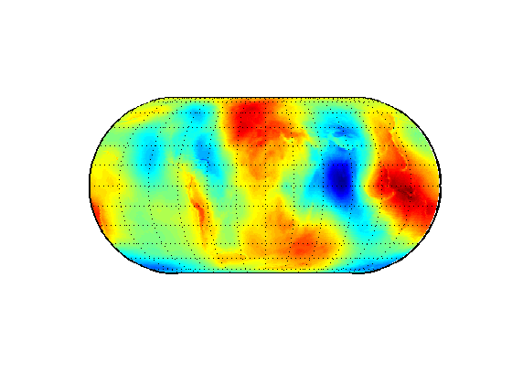
Set the Z data to the geoid height values, rather than a surface with zero elevation.
set(h,'ZData',geoid); light; material(0.6*[1 1 1]); set(gca,'dataaspectratio',[1 1 200]); hcb = colorbar('horiz'); set(get(hcb,'Xlabel'),'String','EGM96 geoid heights in m.')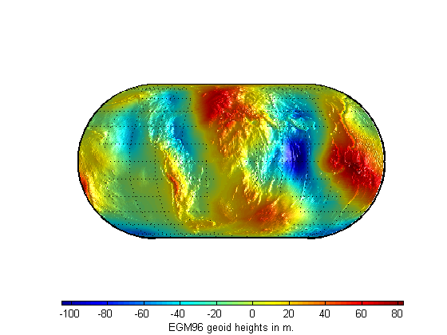
Mask out all the land.
load coast geoshow(lat,long,'DisplayType','Polygon','FaceColor','black'); zdatam(handlem('patch'),max(geoid(:)));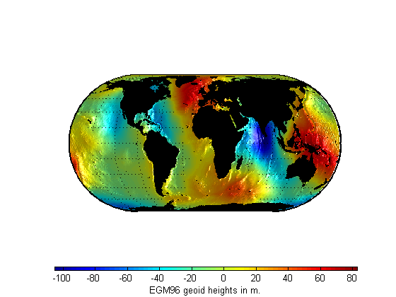
Display the moon albedo image unprojected and in an orthographic projection.
load moonalb
Unprojected.
figure geoshow(moonalb,moonalbrefvec)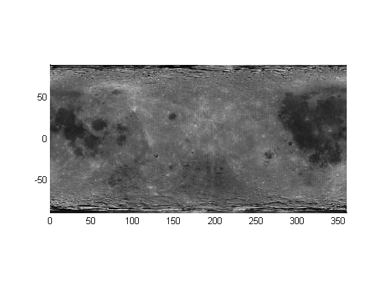
Orthographic projection.
figure axesm ortho geoshow(moonalb, moonalbrefvec) axis off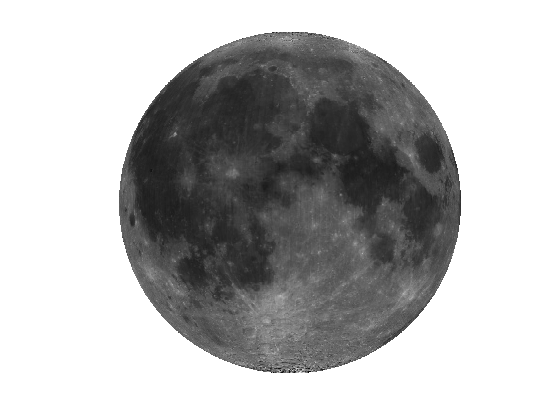